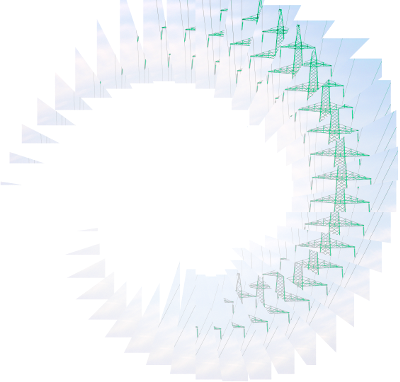
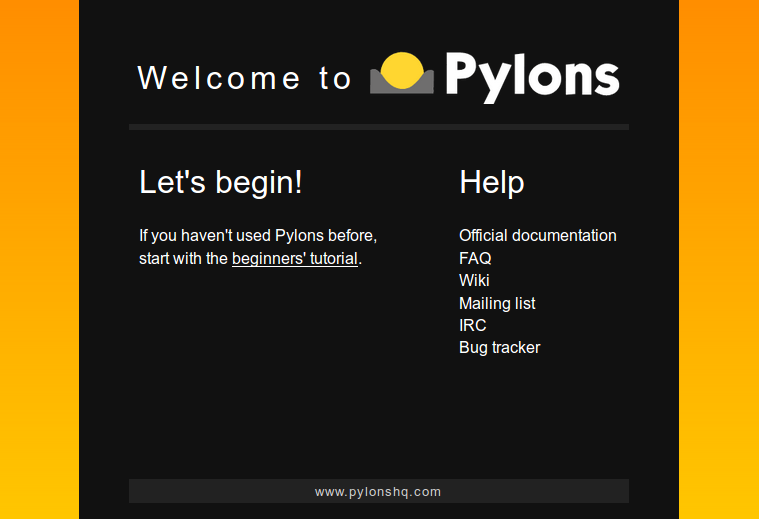
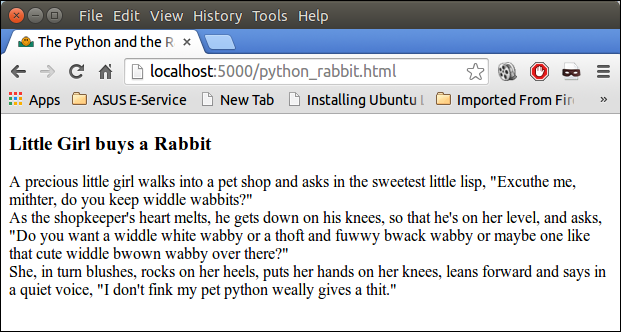
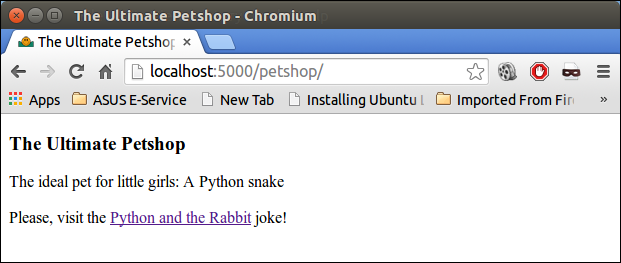
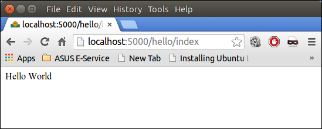
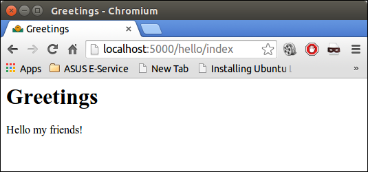

Creating dynamic websites with Python and Pylons
Introduction
 Please notice:Work on this topic is under process. (August 2014)
The picture on the right side is misleading: We are not talking about this kind of Pylons, i.e. electricity pylons, or transmission towers, used to support an overhead power line.
But their is some interesting aspect in this comparison. It is a set of web application frameworks written in Python. So it can be seen as the steel lattice tower of an electricity pylon, but it is not supporting power lines but web pages. James Gardner, a co-founder of Pylons, defined this framework as "Pylons is a lightweight web framework emphasizing flexibility and rapid development using standard tools from the Python community."
We will demonstrate in simple examples - starting with the inevitable "Hello World" project - how to use it. We will also introduce the usage of Makos.
Installation
Before you can use Pylons, you have to install it. If you use Debian, Ubuntu or Mint, all you have to do is execute the following code on a command shell:apt-get install python-pylonsYou are able to create your first Pylons project now:
$ paster create --template=pylons MyProjectYou will be asked two questions and you can answer by keeping the default:
Enter template_engine (mako/genshi/jinja2/etc: Template language) ['mako']: Enter sqlalchemy (True/False: Include SQLAlchemy configuration) [False]:We have created now a directory MyProject, which contains the following files and subdirectories:
- development.ini
- ez_setup.py
- MANIFEST.in
- myproject
- MyProject.egg-info
- README.txt
- setup.cfg
- setup.py
- test.ini
- config
contains the files - controllers
- __init__.py
- __init__.pyc
- lib
- model
- public
- templates
- tests
- websetup.py
cd MyProject paster serve --reload development.ini
Now the web server is running. If you visit the URL http://localhost:5000/ with a browser of your choice, you will see the following welcome screen:

It's generated from ./myproject/public/index.html inside of your MyProject directory.
Static Pages
You can put other html files into the directory ./myproject/public/. These files can be visited by the web browser as well. You can save the following html code as python_rabbit.html:<html> <head> <title>The Python and the Rabbit</title> </head> <body> <h3>Little Girl buys a Rabbit</h3> A precious little girl walks into a pet shop and asks in the sweetest little lisp, "Excuthe me, mithter, do you keep widdle wabbits?" <br> As the shopkeeper's heart melts, he gets down on his knees, so that he's on her level, and asks, "Do you want a widdle white wabby or a thoft and fuwwy bwack wabby or maybe one like that cute widdle bwown wabby over there?" <br> She, in turn blushes, rocks on her heels, puts her hands on her knees, leans forward and says in a quiet voice, "I don't fink my pet python weally gives a thit." </body> </html>You can visit the URL "http://localhost:5000/python_rabbit.html" and the html file above will be rendered:

Any files in the directory "public" are treated as static files. It may contain subdirectories as well, which are part of the URL in the usual way. If we create a subdirectory "petshop" in "public", we will receive a "404 Not Found" error, unless we create an index.html file as well and place it inside of the subdirectory, in our case "petshop". So, there is no directory index default view, as we can have it with Apache. This is for security reasons.
We will create now the subdirectory "petshop" and inlcude the following index.html file:
<html> <head> <title>The Ultimate Petshop</title> </head> <body> <h3>The Ultimate Petshop</h3> The ideal pet for little girls: A Python snake <br><br> Please, visit the <a href="../python_rabbit.html">Python and the Rabbit</a> joke! </body> </html>Visiting "http://localhost:5000/petshop/" or "http://localhost:5000/petshop/index.html", we will encounter the following content:

Getting Dynamic with Controllers
We will create now a dynamic "Hello World" application by creating a controller in our project. The controller is able to handle requests. We can create the controller with the following command:$ paster controller helloIf we visit the URL http://localhost:5000/hello/index we will get a website with the content "Hello World":

We want to change our application into a multilingual website, i.e. visitors should be greeted in their languages. To this purpose we will have to change the file hello.py, which can be found in MyProject/myproject/controllers/:
import logging
from pylons import request, response, session, tmpl_context as c, url
from pylons.controllers.util import abort, redirect
from myproject.lib.base import BaseController, render
log = logging.getLogger(__name__)
class HelloController(BaseController):
def index(self):
# Return a rendered template
#return render('/hello.mako')
# or, return a string
return 'Hello World'
We will change the index method of the HelloController class:
def index(self, id=None):
# Return a rendered template
#return render('/hello.mako')
# or, return a string
if id == "fr":
return 'Bonjour Monde'
if id == "de":
return 'Hallo Welt'
if id == "it":
return 'Ciao mondo'
return 'Hello World'
Calling the URL "http://localhost:5000/hello/index" will still return "Hello World", but adding "/de" - i.e. http://localhost:5000/hello/index/de - to the previous URL will return "Hallo Welt".
Mako Templates
You may have noticed the commented line "#return render('/hello.mako')". If we uncomment this line, the server will use a mako template "hello.mako" or better it will try to use a template. This template is supposed to be located in the directory "myproject/templates/". So far this directory is empty. Uncommenting the line will create the following error message in your browser window:WebError Traceback: -> TopLevelLookupException: Cant locate template for uri '/hello.mako'
A Mako is a template library - also called a template engine - written in Python. It is the default template language included with the Pylons and Pyramid web frameworks. Mako's syntax and API borrows from other approaches, e.g. Django, Jinja2, Myghty, and Genshi. Mako is an embedded Python language, used for Python server pages.
A Mako template contains various kind of content, for example XML, HTML, email text, and so on.
A template can contain directives which represent variable or expression substitutions, control structures, or blocks of Python code. It may also contain tags that offer additional functionality. A Mako is compiled into real Python code.
The easiest possible Mako template consists solely of html code. The following Mako template is statically greeting all friends:
<html> <head> <title>Greetings</title> </head> <body> <h1>Greetings</h1> <p>Hello my friends!</p> </body> </html>We change our hello.py in the directory "controllers" to the following code:
from myproject.lib.base import BaseController, render
class HelloController(BaseController):
def index(self, id=None):
# Return a rendered template
return render('/hello.mako')
We have to save it in the templates subdirectory. The new page looks like this on a chromium browser:

This introduction is about dynamic web pages with Pylons, so we have to personalize our greeting. At first, we want to demonstrate how to use Python variables inside of a template. To this purpose, the tmpl_context is available in the pylons module, and refers to the template context. Objects attached to it are available in the template namespace as tmpl_context. In most cases tmpl_context is aliased as c in controllers and templates for convenience. Our hello.py needs to import tmpl_context and we set c.name to "Frank":
from pylons import tmpl_context as c
from myproject.lib.base import BaseController, render
class HelloController(BaseController):
def index(self, id=None):
c.name = "Frank"
# Return a rendered template
return render('/hello.mako')
The output in a broser hasn't changed dramatically. Just "Hello Frank" instead of "Hello my friends!".
Admittedly, still not very dynamical!
But we can use the URL with our id parameter again:
from pylons import tmpl_context as c
from myproject.lib.base import BaseController, render
class HelloController(BaseController):
def index(self, id=None):
c.name = id if id else "my friends"
# Return a rendered template
return render('/hello.mako')
Visiting http://localhost:5000/hello/index/Frank renders the output "Hello Frank!", whereas the URL http://localhost:5000/hello/index will produce "Hello my friends!"
Mapping the root URL
We have seen, that we can put various static html files under the root directory "myproject/public/index.html" of our project. We saw, that index.html of the public directory is the own which is shown, if we point the browser to http://localhost:5000/ You may want to have a dynamic page right at the root. So, we have to map the root URL http://localhost:5000/ to a controller action. This can be done by modifying the routing.py file in the config directory. If you look at this file, you will find a comment line "# CUSTOM ROUTES HERE". You have to add the following line after this line:
# CUSTOM ROUTES HERE
map.connect('/', controller='hello', action='index')
There is one more thing you shouldn't forget: You have to remove the index.html file in public. Otherwise
this file will be still served.